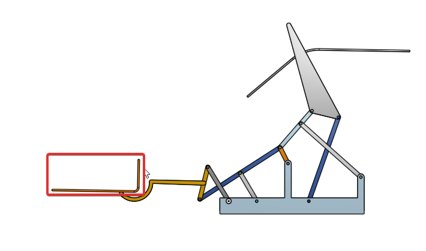

V-rep 動態模擬 << Previous Next >> 系統功能展示
V-rep 動態模擬 << Previous Next >> 系統功能展示
送球機構設計與模擬

目的：將進球門的足球利用機構將足球送回場內，以便於進行下一場球賽。
構想：連桿機構(參考：)
主要連桿的運動行為：
1.進球後，軌道會引導足球到第一個撥桿的位置

2.第一個撥桿
3.主動軸(整個連桿機構運動主要桿件)
4.第二個撥桿 (原本想做成勺子來接球，不過球的相對位置不太好找，於是參考了老師的影片，改成圖片中的樣子，不需要精準抓到足球的位置)
5.第二個撥桿將足球運送到另一個軌道(將球送入場內)
以下為連桿機構相關資料：
送球機構的初步構想(40623244)
送球機構模擬第一步驟(40623244)
送球機構模擬第二步驟(40623244)
送球機構模擬步驟(圖文說明)(40623244)
兩段式接球機構模擬(40623248)
送球機構繪製(40623248)
Onshape送球機構(40623248)
vrep模擬送球機構+sensor感應(40623248)
V-rep 動態模擬 << Previous Next >> 系統功能展示